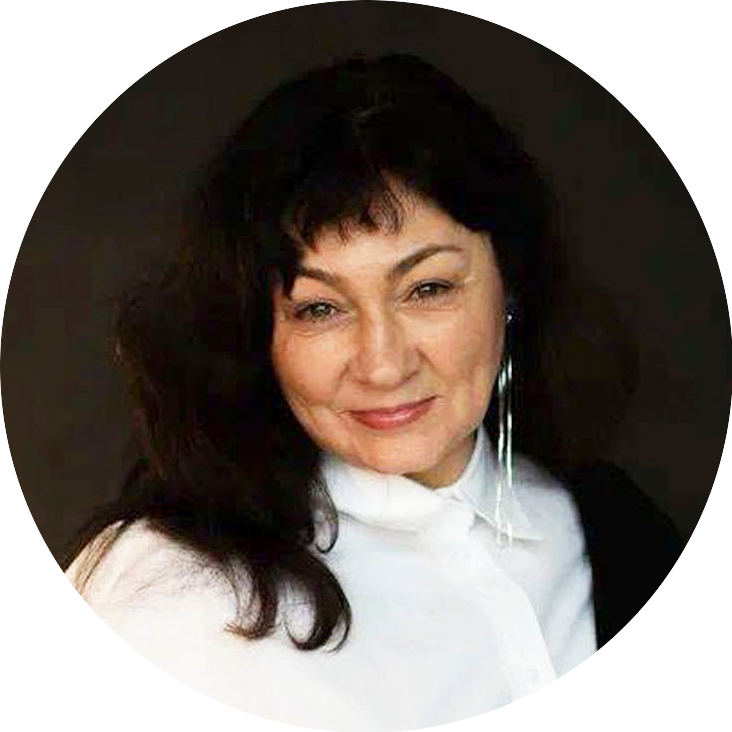
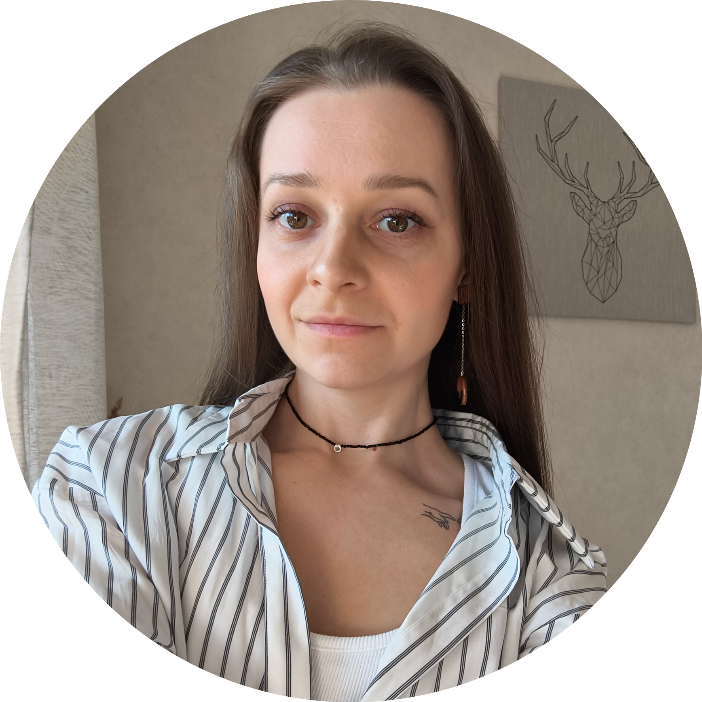

Директор СПб ГБУ «ЦБС Выборгского района», аудитор проектного офиса «РОСТ». Эксперт по эффективному стратегическому управлению и развитию в условиях цифровой трансформации.
«Наша цель — чтобы каждая библиотека стала точкой притяжения: для творчества, знаний, общения и новых возможностей. Мы верим в силу сообщества и в то, что вместе мы можем всё!»
Руководитель проектного офиса «РОСТ», заместитель председателя секции «Социокультурные технологии в креативных индустриях» Российского творческого союза работников культуры. Федеральный эксперт «Росмолодёжь.Гранты», соучредитель АНО «Образование и культура: новации и открытия», участник образовательной программы «Капитаны культуры» 2025.
«Наши задачи: обеспечивать внедрение норм проектной работы и развитие стратегического управления, координируя команды и документооборот для достижения целей; аккумулировать опыт и готовить аналитику для совершенствования мониторинга и повышения эффективности проектов.»
Специалист проектного офиса «РОСТ», куратор PR-направления, специалист по культурно-досуговой деятельности ЦБС Выборгского района. Член секции «Социокультурные технологии в креативных индустриях» Российского творческого союза работников культуры, член Молодёжного совета РТСРК.
«Наша миссия — превращать идеи в реальные события, проекты и пространства, где каждому есть место. Мы не просто офис, мы — драйвер изменений, "штаб" инноваций и точка сбора для всех, кто хочет делать библиотеки сердцем городской жизни.»
Библиотекарь ЦБС Выборгского района, педагог дополнительного образования. Тренер по спидкубингу.
Специалист проектного офиса «РОСТ», куратор SMM-направления, библиотекарь ЦБС Выборгского района. Член Молодёжного совета Василеостровского района.
«Проектный офис может стать драйвером трансформации библиотек в многофункциональные культурные и образовательные кластеры. В долгосрочной перспективе это позволит сформировать уникальные городские сервисы и компетенции, сделав библиотеку ключевым центром общественной жизни и интеллектуального досуга.»

Графический дизайнер ЦБС Выборгского района, специалист проектного офиса «РОСТ».